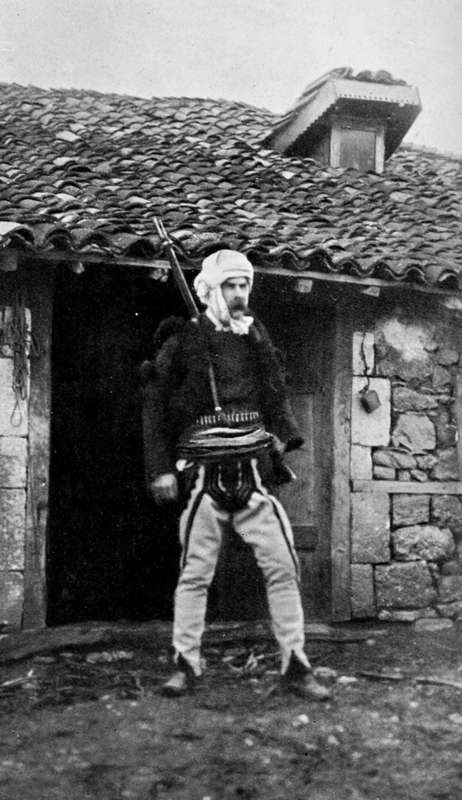

The Quest Of The Pelican : Albania. Part 7
Description
This section is from the book "Bird-Hunting Through Wild Europe", by R. B. Lodge. Also available from Amazon: Bird-Hunting Through Wild Europe.
The Quest Of The Pelican : Albania. Part 7
It was by now midday and very hot, and our horses were badly in need of a rest ; so, seeing a large fig-tree close to some huts, the word was given to off-saddle. The luncheon basket was unpacked, and some eggs procured from the people, and we were soon enjoying a welcome meal.
The Baron had a very good cook, a German, and even when dining in the open air away from home we generally fared very well-the first day, at any rate. The second day out, after the basket was exhausted, of course we had to take our chance with what we could get.
This lake covered a large expanse, but more resembled a vast reed-bed than a lake; we could only see at a distance from the summit of a hill two pieces of open water. I should say that it would be full of breeding Herons, for we saw quantities of Little Egrets, Glossy Ibis, Squacco Herons, and similar birds ; but there were no signs of a colony of Pelicans. The people told us that they didn't nest there ; and, as they seemed to know what they were talking about, which isn't always the case in these parts, we determined to ride on over a range of hills to our second locality. For hours we rode in single file, winding in and out along a narrow path through the woods, which covered the hills thickly, now stooping under an overhanging branch, now swaying on one side to avoid a tree-trunk or rocky projection. Towards evening we arrived at a miserable village, and the guides rode on to the house of the chief inhabitant, a small farmer, to arrange that he should give us quarters for the night. In all probability he was simply ordered to do so in the name of the Bey, their master.
Whether this was the case or not we were received very hospitably, and shown up a rickety ladder to the living-room, which was over the cowshed and stable, as usual. All night we could hear the beasts moving about, and we could also smell them! The courtyard round the house was used as a cattle-yard, and was literally knee-deep in liquid mud and filth. In one corner of the room was a pile of golden maize, while in the middle burnt the usual log-fire, filling the room full of smoke. Cushions and rugs were spread for the Baron and myself, while our men were made comfortable in another room, and coffee and cigarettes were quickly brought to us.
There seemed to be an unusual number of stalwart Albanians about the house, every man armed with his Martini, and a double row of shining brass cartridges round his waist. At dinner, which we ate squatting on the floor at a table four inches high, we three were waited on by six Albanians, whose rifles hung on the wall behind ready for use. It turned out that our host had a vendetta, or blood-feud hanging over him, and was obliged to maintain a bodyguard of ten men, who were eating him out of house and home. He besought B-to try to make some arrangements through Humdy Bey to settle the feud by a compromise ; and I believe the Bey afterwards expressed his willingness to use his influence towards ending the affair for a payment of about £30, the bulk of which would probably go into his own pocket. While waiting for dinner we had some impromptu shooting at a mark, a piece of broken tile on a hillside some 200 yards away. When, at his third shot, B- broke it in half with his Mannlicher carbine, the enthusiasm was immense. The weapon was handed round from hand to hand and examined, while anxious inquiries were made as to the price of a similar one. Several of the men wished to sell their Martinis and get one like it if it were possible.
Nowhere have I seen such interest taken in weapons, especially in firearms, as is manifested by the people in these countries. To possess a rifle is the first necessary of life. Even the boys, as soon as they reach the age of sixteen, may be seen armed like their fathers. In fact, one is hardly accounted a man without one. Frequently one sees the old long-barrelled Turkish muzzle-loading rifle with curved stock, sometimes beautifully inlaid. Many, probably the majority, carry Martinis, the stocks of which are decorated with brass-headed nails in lines and circles. They are generally old, and I should imagine, in spite of the care they take of them, that the barrels must be very worn and corroded. The mountaineers very frequently have Mauser magazine carbines, and very handy weapons they are, especially on horseback, and I believe they are very accurate. The curious thing is that these people, accustomed as they are to shooting all their lives, are not first-rate shots except at short range, and I am told they are bad judges of distance. When it came to shooting competitions, both B- and I could always beat them hollow. I fancy their shooting at one another is at close quarters, and under cover, behind a tree or rock, on which they can rest their rifle, and behind which they are protected from any shots in return. But they make sure of the first shot; it doesn't pay to miss in these countries. I think a man at 600 yards would be pretty safe, especially from Martinis, the trajectory of which is much higher than with the Mauser and other modern rifles, so that any error in judging the distance would render the man shot at perfectly safe. Another reason is, I expect, the high price of cartridges, which are all smuggled. This makes them unwilling to risk uncertain shots at anything, and they don't get enough constant practice. The rifles are handed over to the host on entering another man's house, and are left in the guard-house on entering most of the towns, but the bandolier of cartridges is never laid aside. Even at night I believe they are slept in, and the men certainly sleep in their clothes, including the fez, for I have many a time slept alongside them on the floor, round the fire. Now a single row of Martini cartridges all round the body is a considerable weight, and as many men carry two complete rows, the burden constantly carried must be very great. But I have noticed occasionally, whether from inability to replace them from poverty, or to economize weight, that some of them are merely empty cases which have been fired, and consequently have no bullets in them. Considered merely as an article of dress, the even row of shining brass cases against the scarlet waistband is most effective and picturesque, and certainly gives a man a martial appearance. The whole Albanian costume is very wild and fantastic, especially the wide white kilt like a big fluted petticoat; but the more usual garb is a pair of trousers fitting tightly to the leg, made of thick white felt, decorated in a weird and curious fashion with broad black braid. These are held up by a scarlet sash wound many times round the body, in the folds of which is the revolver, while the cartridges for the rifle are held in a leather bandolier put over the waistband. The black jacket, with heavy tufts of black worsted on the shoulders and arms and a long black fringe hanging down the back, makes a man look much bigger than he really is and adds much to his imposing appearance. (I was surprised to find on donning the costume what a difficulty I had to squeeze myself into it.) The fez is always white, either square topped, like the Turkish red fez, but without the tassel, or round, like a skull cap ; and round the head and under the chin is wrapped a white head-cloth. The rifle is carried slung over the left shoulder when on foot, but a mounted man more often holds it in front of him across the saddle. It is then ready for instant use.
The Author In Albanian Costume
Continue to:
- prev: VII. The Quest Of The Pelican : Albania. Part 6
- Table of Contents
- next: The Quest Of The Pelican : Albania. Part 8